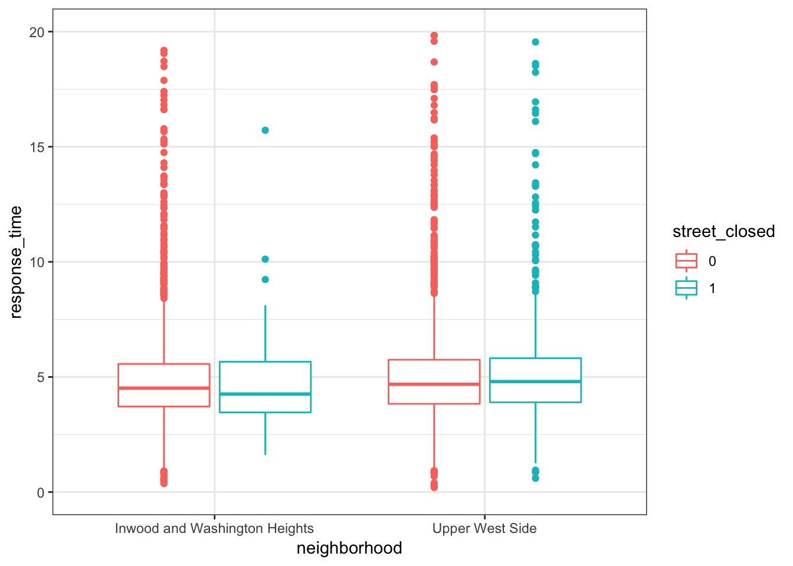

incident_dat_2017 <-
read_csv('data/Incidents_Responded_to_by_Fire_Companies.csv',
col_types = "cicccicciccccccccccciccccccc") %>%
janitor::clean_names() %>%
#recode date/time
mutate(incident_date_time = mdy_hms(incident_date_time),
arrival_date_time = mdy_hms(arrival_date_time)) %>%
#select year 2017
filter(year(incident_date_time) == 2017,
incident_type_desc == "300 - Rescue, EMS incident, other") %>%
select(im_incident_key, incident_date_time, arrival_date_time,
street_highway:borough_desc) %>%
na.omit() %>%
# Added response time(minute) variable
# mutate(response_time = arrival_date_time - incident_date_time) %>%
mutate(response_time = difftime(arrival_date_time, incident_date_time, units = 'mins'),
# Added hour variable
hour = hour(incident_date_time),
date = date(incident_date_time),
# Added incident_month and incident_day variables from incident_date_time
incident_date = as.Date(incident_date_time)) %>%
separate(incident_date,
into = c("incident_year", "incident_month", "incident_day"),
sep = "-") %>%
select(-incident_year) %>%
mutate(incident_month = as.numeric(incident_month),
incident_day = as.numeric(incident_day))## Warning: Unnamed `col_types` should have the same length as `col_names`.
## Using smaller of the two.## Warning in rbind(names(probs), probs_f): number of columns of result is not
## a multiple of vector length (arg 1)## Warning: 13119 parsing failures.
## row # A tibble: 5 x 5 col row col expected actual file expected <int> <chr> <chr> <chr> <chr> actual 1 91 FIRE_SPRE… no trailing c… " - Beyond build… 'data/Incidents_Respo… file 2 199 FIRE_SPRE… no trailing c… " - Confined to … 'data/Incidents_Respo… row 3 440 FIRE_SPRE… no trailing c… " - Confined to … 'data/Incidents_Respo… col 4 492 FIRE_SPRE… no trailing c… " - Confined to … 'data/Incidents_Respo… expected 5 569 FIRE_SPRE… no trailing c… " - Confined to … 'data/Incidents_Respo…
## ... ................. ... .......................................................................... ........ .......................................................................... ...... .......................................................................... .... .......................................................................... ... .......................................................................... ... .......................................................................... ........ ..........................................................................
## See problems(...) for more details.save(incident_dat_2017, file = "data/incident_dat_2017.RData")url = "https://www.health.ny.gov/statistics/cancer/registry/appendix/neighborhoods.htm?fbclid=IwAR3N4VlKC1OehRZyEuDYPEAE7AFAEXXIRC11seIBKxA-0fd3g4hL0QvnV20"
xml = read_html(url)
zip_code_table = (xml %>% html_nodes(css = "table")) %>%
.[[1]] %>%
html_table() %>%
janitor::clean_names() %>%
select(neighborhood, zip_codes) %>%
separate(zip_codes, c("a", "b", "c", "d", "e", "f", "g", "h", "i"),
sep = ",") %>%
gather(key = to_remove, value = zip_code, a:i) %>%
select(-to_remove) %>%
na.omit() %>%
distinct() %>%
mutate(zip_code = as.numeric(zip_code))## Warning: Expected 9 pieces. Missing pieces filled with `NA` in 41 rows [1,
## 2, 3, 4, 5, 6, 7, 8, 9, 10, 11, 12, 13, 14, 15, 16, 17, 18, 19, 20, ...].save(zip_code_table, file = "data/zipcode.RData")# incident_dat_2017
incident_dat_2017 = incident_dat_2017 %>%
mutate(zip_code = as.numeric(zip_code))
finaldat =
left_join(incident_dat_2017, zip_code_table, by = "zip_code") %>%
inner_join(., nyc_weather_2017, by = "date")
save(finaldat, file = "data/finaldat.RData")prcp_eda =
finaldat %>%
mutate(prcp_ctg = fct_relevel(prcp_ctg, c("no_prcp", "low", "high"))) %>%
group_by(date, prcp_ctg) %>%
summarise(mean_resp_time = mean(response_time)) %>%
ggplot(aes(x = prcp_ctg, y = mean_resp_time)) +
geom_violin(aes(fill = prcp_ctg), alpha = .3) +
stat_summary(fun.y = mean, geom = "point", size = 2, color = "blue") +
labs(
title = "Rainy conditions",
y = "Mean response time(min)",
x = " "
) +
scale_x_discrete(labels = c("0(mm)", "0-25(mm)", "25(mm)+")) +
viridis::scale_fill_viridis(
name = "Precipitation",
discrete = TRUE) +
theme(plot.title = element_text(size = 12),
axis.title.y = element_text(size = 8),
axis.text.x = element_text(size = 9),
legend.position = "None")
snow_eda =
finaldat %>%
mutate(snow_ctg = fct_relevel(snow_ctg, c("no_snow", "low", "high"))) %>%
group_by(date, snow_ctg) %>%
summarise(mean_resp_time = mean(response_time)) %>%
ggplot(aes(x = snow_ctg, y = mean_resp_time)) +
geom_violin(aes(fill = snow_ctg), alpha = .3) +
stat_summary(fun.y = mean, geom = "point", size = 2, color = "blue") +
labs(
title = "Snowy conditions",
y = "",
x = " "
) +
scale_x_discrete(labels = c("0(mm)", "0-50(mm)", "50(mm)+")) +
viridis::scale_fill_viridis(
name = "Snow",
discrete = TRUE) +
theme(plot.title = element_text(size = 12),
axis.title.y = element_text(size = 9),
axis.text.x = element_text(size = 8),
legend.position = "None")
prcp_snow = prcp_eda + snow_eda
ggsave("prcp_snow.png", plot = prcp_snow)## Saving 7 x 5 in image## Don't know how to automatically pick scale for object of type difftime. Defaulting to continuous.
## Don't know how to automatically pick scale for object of type difftime. Defaulting to continuous.season_eda =
finaldat %>%
mutate(season = fct_relevel(season, c("Spring", "Summer", "Fall", "Winter"))) %>%
group_by(date, season) %>%
summarise(mean_resp_time = mean(response_time)) %>%
ggplot(aes(x = season, y = mean_resp_time)) +
geom_violin(aes(fill = season), alpha = .3) +
stat_summary(fun.y = mean, geom = "point", size = 2, color = "blue") +
labs(
y = "Mean response time (min)",
x = " "
) +
viridis::scale_fill_viridis(
name = "season",
discrete = TRUE) +
theme(plot.title = element_text(size = 13),
axis.title.y = element_text(size = 10),
axis.text.x = element_text(size = 9),
legend.position = "None")
ggsave("season.png", plot = season_eda)## Saving 7 x 5 in image## Don't know how to automatically pick scale for object of type difftime. Defaulting to continuous.hour_eda =
finaldat %>%
group_by(hour, season) %>%
ggplot(aes(x = hour, y = response_time, color = season)) +
geom_smooth(se = FALSE) +
scale_x_continuous(breaks = c(6, 12, 18),
labels = c("6am", "12pm", "18pm")) +
geom_vline(xintercept = c(6, 12, 18), color = "darkred") +
labs(
x = " ",
y = "Mean response time (min)"
) +
viridis::scale_color_viridis(
name = "Season",
discrete = TRUE)
theme(plot.title = element_text(size = 13),
axis.title.y = element_text(size = 10),
axis.text.x = element_text(size = 12),
legend.position = "None") ## List of 4
## $ axis.title.y :List of 11
## ..$ family : NULL
## ..$ face : NULL
## ..$ colour : NULL
## ..$ size : num 10
## ..$ hjust : NULL
## ..$ vjust : NULL
## ..$ angle : NULL
## ..$ lineheight : NULL
## ..$ margin : NULL
## ..$ debug : NULL
## ..$ inherit.blank: logi FALSE
## ..- attr(*, "class")= chr [1:2] "element_text" "element"
## $ axis.text.x :List of 11
## ..$ family : NULL
## ..$ face : NULL
## ..$ colour : NULL
## ..$ size : num 12
## ..$ hjust : NULL
## ..$ vjust : NULL
## ..$ angle : NULL
## ..$ lineheight : NULL
## ..$ margin : NULL
## ..$ debug : NULL
## ..$ inherit.blank: logi FALSE
## ..- attr(*, "class")= chr [1:2] "element_text" "element"
## $ legend.position: chr "None"
## $ plot.title :List of 11
## ..$ family : NULL
## ..$ face : NULL
## ..$ colour : NULL
## ..$ size : num 13
## ..$ hjust : NULL
## ..$ vjust : NULL
## ..$ angle : NULL
## ..$ lineheight : NULL
## ..$ margin : NULL
## ..$ debug : NULL
## ..$ inherit.blank: logi FALSE
## ..- attr(*, "class")= chr [1:2] "element_text" "element"
## - attr(*, "class")= chr [1:2] "theme" "gg"
## - attr(*, "complete")= logi FALSE
## - attr(*, "validate")= logi TRUEggsave("hour.png", plot = hour_eda)## Saving 7 x 5 in image## Don't know how to automatically pick scale for object of type difftime. Defaulting to continuous.## `geom_smooth()` using method = 'gam' and formula 'y ~ s(x, bs = "cs")'street_closure_2017 <-
read_csv('data/Street_Closures_due_to_construction_activities_by_Intersection.csv') %>%
janitor::clean_names() %>%
#recode date/time
mutate(work_start_date = mdy_hms(work_start_date),
work_end_date = mdy_hms(work_end_date),
work_time = round(difftime(work_end_date, work_start_date,
units = 'days'), 0)) %>%
#select year 2017
filter(year(work_start_date) == 2017) %>%
select(-purpose) %>%
na.omit() %>%
mutate(A = toupper(str_replace_all(onstreetname, fixed(" "), "")),
B = toupper(str_replace_all(fromstreetname, fixed(" "), "")))## Parsed with column specification:
## cols(
## NODEID = col_integer(),
## ONSTREETNAME = col_character(),
## FROMSTREETNAME = col_character(),
## BOROUGH_CODE = col_character(),
## WORK_START_DATE = col_character(),
## WORK_END_DATE = col_character(),
## PURPOSE = col_character()
## )save(street_closure_2017, file = "data/street_closure_2017.RData")#list of streets of intereste
street_zip <- read_excel('street_junctions_zipcode.xlsx') %>%
#delete white space from street name
mutate(A = toupper(str_replace_all(street_A, fixed(" "), "")),
B = toupper(str_replace_all(street_B, fixed(" "), "")))
# Extract street closure data based on street_zip
#Merge A to A and B to B
first_set <- street_zip %>%
inner_join(street_closure_2017, by = c("A", "B"))
#Merge A to B and B to A
second_set <- street_zip %>%
inner_join(street_closure_2017, by = c("A" = 'B', 'B' = "A"))
street_closure_UWS_WH <- first_set %>%
bind_rows(second_set) %>%
select(street_A:neighborhood, work_start_date:work_time)
#Create function that checks the closure duration whether it happens while the call was made
check_street_closure <- function(datetime, zip){
#Filter only the zipcode of interest
zipcode_closure <- street_closure_UWS_WH %>%
filter(zipcode == zip) %>%
mutate(street_closed = ifelse(work_start_date < datetime & work_end_date > datetime, 1, 0))
if( sum(zipcode_closure$street_closed) > 0){
return(1)
} else {return(0)}
}
#Then create variable street closure (y/n) in the incident_dat_2017 focusing on Washington heights and UWS
dat_subset <- finaldat %>%
filter(zip_code %in% c(10023, 10024, 10025, 10032, 10033, 10040))
#Down to 6065 observations
dat_subset$street_closed <- NA
for (i in 1:nrow(dat_subset)) {
dat_subset$street_closed[i] <-
check_street_closure(dat_subset$incident_date_time[i], zip = dat_subset$zip_code[i])
}
save(dat_subset, file = "data/subset_dat.RData")dat_subset %>%
mutate(street_closed = as.factor(street_closed)) %>%
ggplot(aes(x = neighborhood, y = response_time, color = street_closed)) +
geom_boxplot()+
ylim(0, 20)## Warning: Removed 62 rows containing non-finite values (stat_boxplot).
#actually the difference is really small.